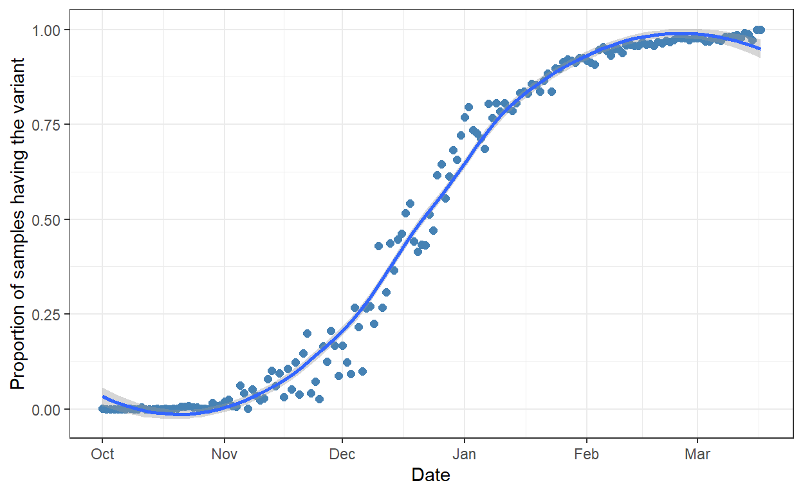
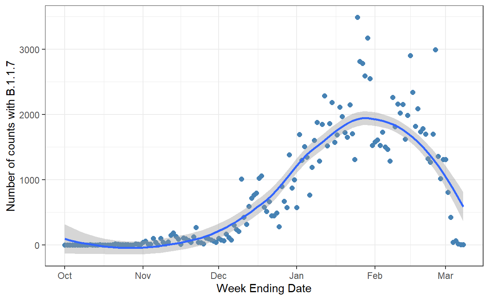
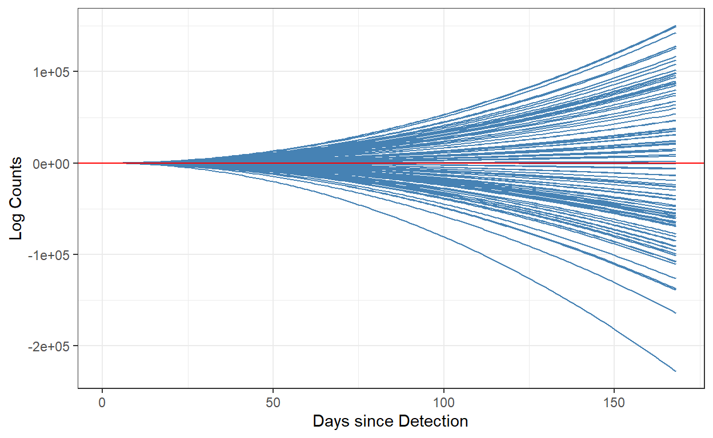
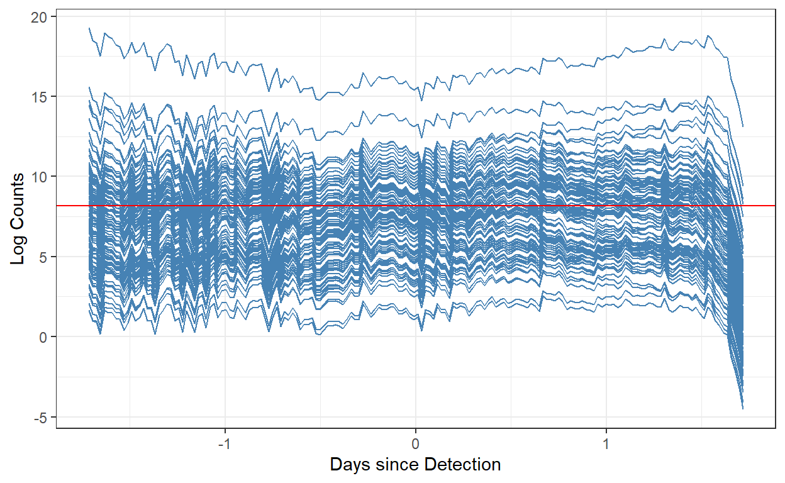

A short description of the post.
The data that we have right now is based on UK surveillance data from the COVID-19 Genomics Consortium (COG)
# Read from the COG UK website
data <- read_csv(file = "https://cog-uk.s3.climb.ac.uk/phylogenetics/latest/cog_metadata.csv")
# Sequence name contains information on region
# Filtered out anything before october since we're assuming the variant starts in October
data <- data %>% separate(sequence_name, c("region", NA, NA)) %>%
select(region, sample_date, epi_week, lineage) %>%
filter(sample_date >= as_date("2020-10-01"))
# Getting total counts by region and date
total_counts <- data %>% group_by(region, sample_date) %>% count()
# Getting strain counts by region and date
strain_counts <- data %>% group_by(region, sample_date) %>%
summarise(count = sum(lineage == "B.1.1.7", na.rm = TRUE))
# Merging data frames
counts <- inner_join(strain_counts, total_counts)
# Renaming
counts <- counts %>% rename("strain_detect" = "count", "tot_samples" = "n")
# Sum across all regions and group by date, as well as calculate a proportion
counts <- counts %>% group_by(sample_date) %>% summarise(strain_detect = sum(strain_detect), tot_samples = sum(tot_samples)) %>%
mutate(prop = strain_detect/tot_samples) %>% rename("date" ="sample_date")
counts <- counts %>% mutate(prev = prop * 100)
rmarkdown::paged_table(counts)
The data is essentially total number of samples sequenced per day, and the number of samples containing the variant “B.1.1.7” of interest. The problem of estimating the proportion of cases being from the variant can be formulated as a binomial proportion estimation problem. The assumption then is that our genomic sampling is a random sample of the population. I choose to use a Bayesian approach here since it is really flexible, and allows for quantifying uncertainty of estimation on a per day level. In essence, we want to fit a model to show the relative abundance of the variant as a function of the number of days since the first variant was detected. We’re going to assume that this date would be September 30th (so October 1st would be day 1).
This problem is difficult to approach. Let’s first try to plot the relative abundance of the variance per day:
ggplot(counts, aes(x = date, y = prop)) + geom_point(col = "steelblue", size = 2) + geom_smooth() +
theme_bw() + labs(x = "Date", y = "Proportion of samples having the variant")

It seems that the number of cases with the variant is increasing in a non-linear fashion with some plateauing effect. However, we don’t really want to model just the proportion of samples being positive, since it is naturally bounded between 0 and 1 (hence the plateau effect) and at some point most surveys would return either 0 or 1 relative abundance anyways. Ideally we would be able to obtain something similar to We would want to fit a time series model that incorporates the raw counts directly, controlling for the number of samples sequenced. First, let’s plot the total number detected strains
ggplot(counts, aes(x = date, y = strain_detect)) + geom_point(col = "steelblue", size = 2) +
theme_bw() + geom_smooth() +
labs(y = "Number of counts with B.1.1.7", x = "Week Ending Date")

For the purposes of this exercise, we want to utilize a Bayesian approach. The approach will allow us to quantify the uncertainty of the parameters and predictions, while also enabling a very flexible fitting procedure using Stan probabilistic programming language.
For the sake of simplicity, we’re going to estimate a non-linear trend (as observed above) using a Poisson regression model with a quadratic term1.
\[ (y_t) = \beta_0 + \beta_1t^2 + \epsilon_t \]
However, using outcomes as raw counts of sequences detected as the VOC is unfair, since each day there are a different number of case samples sequenced. As such, we want to add an offset term. An offset term can be used in the context of modeling rates from count data and is usually the number of “trials,” or in this case, the number of samples sequenced each week. As such, we have:
\[ log(y_t) = \beta_0 + \beta_1t^2 + \log(offset_t) + \epsilon_t \]
Before we fit our model, first we have to figure out the priors for our parameters. We would want to use a weakly informative prior as suggested by the Bayesian literature (Gelman et al. 2008) (and the default prior values used in rstanarm, a package for fitting generalized linear models using the MCMC). We follow the procedure outlined in rstanarm2 where we initially start with \(N(0,2.5)\) for priors on regression coefficient \(\beta_1\) and intercept \(\beta_0\), and \(Exponential(1)\) for auxiliary parameter \(\sigma_t\) for \(\log(y_t)\). Then we re-scale based on the standard deviation of the outcome.
One benefit of the Bayesian approach is that we are specifying a data generating model and specify prior beliefs on the distribution of the outcome we’re trying to model. This means we can triage our choice of prior distribution by actually simulating the outcome from our priors and observe whether the ranges make sense (it doesn’t have to fit our real data since we haven’t really updated our prior beliefs yet!). We can do this easily in R since our model is simple:
n_iter <- 100
offset <- log(counts$tot_samples)
t <- scale(counts$dod, scale = T)
t <- counts$dod
b1 <- rnorm(n_iter, 0, 2.5)
b0 <- rnorm(n_iter, 0, 2.5)
sigma <- rexp(n_iter, 1)
outcome <- matrix(nrow = length(t), ncol = n_iter)
for (i in seq_len(n_iter)){
outcome[,i] <- b1[i] * t^2 + b0[i] + offset
}
colnames(outcome) <- paste0("iter",seq_len(n_iter))
df <- dplyr::bind_cols(t = t, outcome) %>%
pivot_longer(cols = starts_with("iter"), names_to = "iter",
values_to = "log_counts") %>%
mutate(counts = exp(log_counts))
ggplot(df, aes(x = t, y = log_counts, group = iter)) +
geom_line(col = "steelblue") +
geom_abline() + theme_bw() +
labs(x = "Days since Detection", y = "Log Counts") +
geom_hline(yintercept = max(log(counts$strain_detect)), col = "red")

This looks good but doesn’t really make sense in context. This is because the values that we get are wildly different based on our data. This is essentially equivalent to a non-informative prior. Let’s attempt the scaling mechanism that we discussed earlier. Our new priors are:
\[ \beta_1 \sim N(0, 2.5/46) \\ \beta_0 \sim N(0, 2.5) \\ \sigma \sim \exp(1) \]
Let’s try it out!
n_iter <- 100
offset <- log(counts$tot_samples)
t <- scale(counts$dod, scale = T)
t <- counts$dod
b1 <- rnorm(n_iter, 0, 0.054)
b0 <- rnorm(n_iter, 0, 2.5)
sigma <- rexp(n_iter, 1)
outcome <- matrix(nrow = length(t), ncol = n_iter)
for (i in seq_len(n_iter)){
outcome[,i] <- b1[i] * t^2 + b0[i] + offset
}
colnames(outcome) <- paste0("iter",seq_len(n_iter))
df <- dplyr::bind_cols(t = t, outcome) %>%
pivot_longer(cols = starts_with("iter"), names_to = "iter",
values_to = "log_counts") %>%
mutate(counts = exp(log_counts))
ggplot(df, aes(x = t, y = log_counts, group = iter)) +
geom_line(col = "steelblue") +
geom_abline() + theme_bw() +
labs(x = "Days since Detection", y = "Log Counts") +
geom_hline(yintercept = max(log(counts$strain_detect)), col = "red")

Hyndman, R.J., & Athanasopoulos, G. (2021) Forecasting: principles and practice, 3rd edition, OTexts: Melbourne, Australia. OTexts.com/fpp3. Accessed on 03/14/2021↩︎